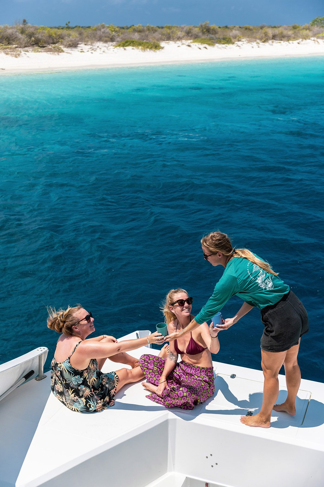

Your questions, answered.
Short answers about booking, the day itself, cruise trips and cancelling.
Booking and paying
How do I pay?
After we say yes, you pay by bank transfer or in cash. You don't need a credit card.
Do we pay per person?
No. You pay one price for your whole group. Tell us how many you are when you book and you see the price.
How long are the trips?
Mini Escape takes 3 hours. Ocean Adventure takes 4 hours. Full Experience takes 5 hours. The cruise trip takes 4 hours.
Do I need to pay the nature fee?
If you are on holiday, yes. Bonaire asks you to pay the STINAPA nature fee to swim in the marine park. It is not in our price. You can pay it online before your trip. Bring the proof with you. Cruise guests and residents with a sedula don't pay it.
Can we add food?
Food is only for private and custom trips. Plan a custom trip and pick platters: BBQ, Dutch, fish, local snacks, a lunch box or vegetarian. We add the price to your quote.
On the day
Where does the boat leave from?
From the marina near Plaza Resort. After you book we send you the way there and a short video.
What do I bring?
Swimwear, a towel and sunscreen. Shoes come off on the boat.
What is included?
A guide who snorkels with you, snorkel gear, the water slide, a floating mat, music, the captain and crew, and an open bar with sodas, beer, wine, rum and our punch.
Can I swim if I've never snorkeled?
Yes. A guide snorkels with you. Lots of guests try it for the first time on our boat.
Can I bring my own snorkel gear or float?
Yes. We have snorkel gear for everyone, but your own is welcome too. Bonaire is windy, so tie your float to your wrist with a rope. Then it can't drift away.
Is there a toilet on board?
Yes. There is a clean toilet on the boat.
Is the boat really electric?
Yes. Miss Green is the first fully electric catamaran on Bonaire.
Cruise guests
Where do cruise guests meet?
At the parking lot next to Capriccio Restaurant. It is a 3 minute walk from the ship. Look for our sign. A bus takes you to the boat, with someone from our crew.
What if my ship is late?
We move your trip. We plan it around your time in port.
What do I need to bring?
Bring a towel. Towels and showers are not on the boat. If you need a prescription mask, bring your own.
Can we change the cruise trip?
Yes, as long as it fits in the 4 hours. One longer drift snorkel, or more time to float and relax. Just tell us.
What does the cruise trip cost?
Ask us. Send a request and we reply with a price.
Cancelling
What if we can't come?
Cancel less than 30 days before: you pay 25%. Less than 3 days before: 50%. Less than 1 day before, or not showing up: the full price.
What if my ship doesn't stop on Bonaire?
You get all your money back.
Still have a question?
Send us a message on WhatsApp. We reply Monday to Friday, 8:00 to 17:00.
On a cruise ship? Request the cruise trip